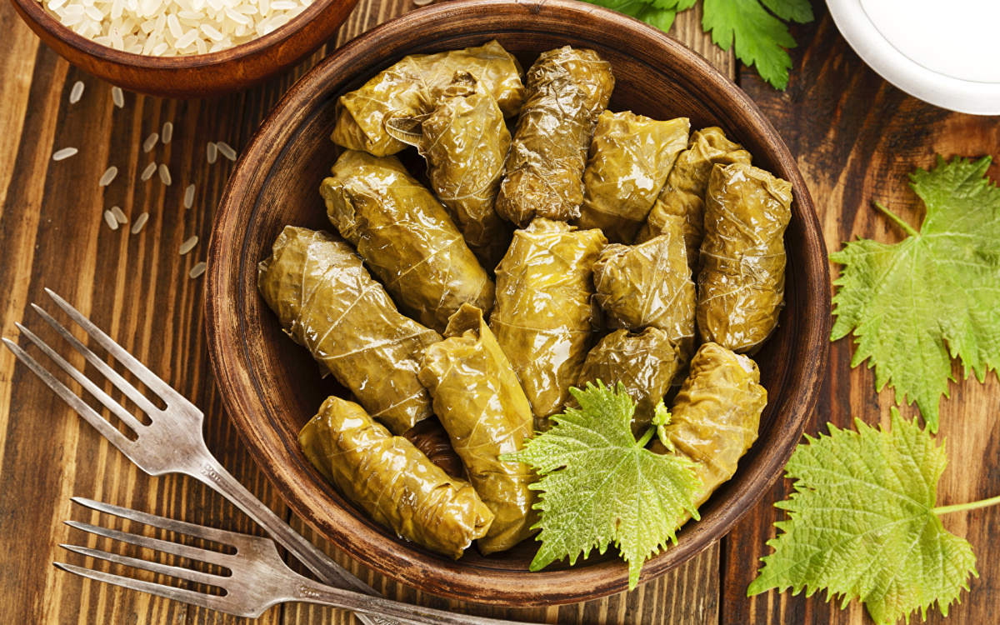

Главное богатство и украшение любого армянского стола - это разумеется, легендарная толма. Аппетитное кушанье из виноградных листьев, фаршированных рисом да мясом. Всего армяне знают до 70 различных видов своего коронного исконного блюда толмы. Вблизи знаменитого армянского города Двин, некогда столицы Великой Армении, с 2011-го проводится знаменитый всемирный фестиваль толмы (Դոլմայի փառատոն).
Но одно всегда остается неизменным - готовить настоящую, буквально тающую во рту, толму правильно умеют лишь сами армяне. И только в самой Армении.
Считается, что толма возникла у армян еще в середине I-го тысячелетия нашей эры. О том, что толма именно армянское изобретение указывает ее состав - рис и виноградные листья. Ибо соседние с армянами кочевые исламские племена риса и винограда не выращивали.
Любопытно, что изначально толма в армянском языке именовалась по-другому. А именно - լիցք (лицк). От корня լից (лиц) «заполнять» и старого окончания множественного числа «ք» (-К). То есть, «наполненные, заполненные». Именно такое название главного армянского блюда известно в кулинарных книгах X-XII вв. В поздние средние века армянский лицк скопировали повара османских султанов. И это блюдо, по одной из версий, получило название долма - в том же значении, «наполненная». Слово долма так закрепилось за лицком в условиях турецкого господства, что армяне сейчас также стали называть свое главное коронное блюдо տոլմա — «толма». Впрочем, есть версия, что слово толма - тоже чисто армянское. И идет от староармянского слова «толи»- виноградный лист, лоза.